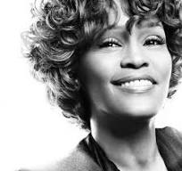
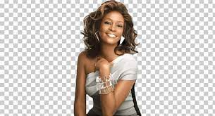

More Info
Whitney Elizabeth Houston - an American singer and actress,
nicknamed "the Voice", she is one of the best-selling music artists of all time, with over 220 million records
sold worldwide. In 2023, Rolling Stone named her the second-greatest singer of all time. Houston influenced many
singers in popular music, and was known for her powerful, soulful vocals, vocal improvisation skills, and use of
gospel singing techniques in pop music. She had 11 number-one singles on the Billboard Hot 100 and is the only artist
to have seven consecutive number-one singles on the chart.

View Page
Whitney's Fame
Houston won numerous accolades, including two Emmy Awards, eight Grammy Awards (including two Grammy Hall of Fame honors),
fourteen World Music Awards, sixteen Billboard Music Awards (45 Billboard awards in all) and twenty-two American Music Awards.
Houston holds the record for the most American Music Awards received in a single year by a woman with eight wins in 1994
(overall tied with Michael Jackson). Houston was the first artist at the Billboard Music Awards to win more than 11 awards in
one night at its fourth annual ceremony in 1993, which set a Guinness World Record at the time. Houston continues to hold
the record for the most WMAs won in a single year, winning five trophies at the sixth World Music Awards in 1994.

More Info
Whitney's Death
On February 11 2012, Houston was found unconscious in Suite 434 at the Beverly Hilton, submerged in the bathtub. Beverly
Hills paramedics arrived about 3:30 pm, found Houston unresponsive, and performed CPR. Houston was pronounced dead at 3:55 pm PST.
The cause of death was not immediately known; local police said there were "no obvious signs of criminal intent". On March 22, 2012,
the Los Angeles County Coroner's Office reported that Houston's death was caused by drowning and the "effects of atherosclerotic heart
disease and cocaine use". The office said the amount of cocaine found in Houston's body indicated that she used the substance shortly
before her death.
 Read More
Read More